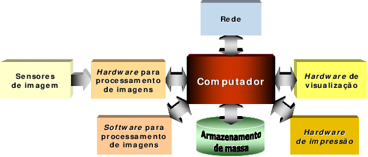
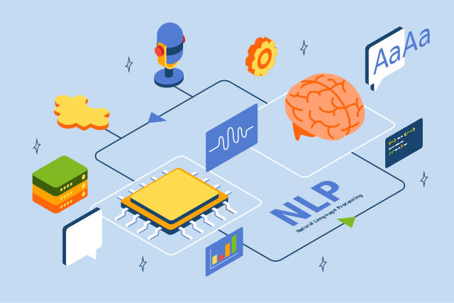

O Processamento Computacional é a espinha dorsal da capacidade dos computadores de realizar operações complexas. Desde os primórdios da computação, a arquitetura de Von Neumann tem sido a base, estruturando a organização fundamental de um computador moderno.
Organização de um Computador
A arquitetura de Von Neumann, concebida por John von Neumann, define a organização básica de um computador. Nela, a CPU desempenha o papel crucial de executar instruções, enquanto a memória armazena dados e instruções. Dispositivos de entrada e saída proporcionam a interface com o mundo exterior.

Descrição de uma Tarefa
Tarefas em um contexto computacional referem-se a operações específicas que o sistema deve realizar. Isso pode incluir desde simples cálculos matemáticos até operações complexas de manipulação de dados. Cada tarefa passa por fases distintas, como entrada, processamento, saída e armazenamento.
Fase de Execução de uma Tarefa
A execução de uma tarefa segue um fluxo lógico. Inicia-se com a fase de entrada, onde dados são adquiridos. A CPU, núcleo de processamento, realiza o processamento desses dados. A fase de saída apresenta os resultados, e a fase de armazenamento garante a persistência de dados para uso futuro.
Unidades de Execução de Tarefas
O computador é uma orquestra de unidades de execução de tarefas. A CPU, com sua capacidade de processamento, a memória para armazenamento temporário e permanente, e os dispositivos de entrada e saída, colaboram para realizar operações complexas de maneira eficiente.
Computador como um Conjunto de Unidades de Execução de Tarefas
A interconexão entre essas unidades é vital. Uma comunicação eficaz entre a CPU, a memória e os dispositivos de entrada e saída é essencial para garantir a execução harmoniosa de tarefas variadas. A cooperação efetiva dessas unidades é a chave para o desempenho do sistema como um todo.
Componentes de um Computador
Cada componente desempenha um papel crucial. A CPU, com sua unidade de controle e unidade de cálculo, é o cérebro do computador. A memória, com diferentes tipos como RAM, ROM e Cache, gerencia o armazenamento. Os dispositivos de entrada e saída proporcionam a interface com o usuário.

Descrição das Unidades Componentes
Uma compreensão aprofundada de cada componente é essencial. A CPU, com seus registradores e unidade de controle, é responsável por coordenar as operações. A memória, organizada em células, possui uma estrutura específica. Os dispositivos de entrada e saída facilitam a comunicação bidirecional entre o computador e o usuário.
Unidade de Memória
A estrutura da memória é composta por células, cada uma armazenando informações binárias. O modo de endereçamento permite acesso eficiente a dados, enquanto o modo de medição da capacidade de memória é crucial para dimensionar os recursos do sistema. Diferentes tipos de memória, como RAM e ROM, atendem a diferentes requisitos de armazenamento.
Processador
O processador é o coração pulsante do computador. Com uma estrutura complexa, abriga a unidade de cálculo para operações matemáticas e lógicas, e a unidade de controle, que orquestra a execução de instruções. Este componente executa milhões de operações por segundo, tornando possível uma variedade de tarefas.
Conclusão
O entendimento profundo do processamento computacional é essencial para qualquer pessoa envolvida na área da tecnologia da informação. Este módulo oferece uma base sólida para compreender a organização interna de um computador, suas unidades de execução de tarefas e a sinergia necessária para realizar operações computacionais de maneira eficaz.